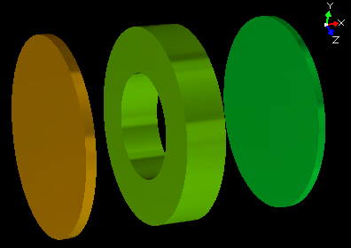
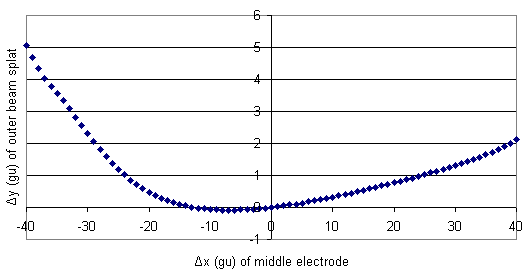

Purpose
This is a simple example of doing geometry optimization through SIMION 8's batch mode operation. In geometry optimization, we parameterize certain features of the geometry, vary those parameters over some domain, and run the simulation for each variation. Each variation requires building a GEM file, convering it to a PA, refining the PA, and flying ions. This is entirely automated through SIMION 8's batch mode of operation, thereby allowing the examination of a large number of geometries at one time. Geometry optimization is analogous to voltage optimization such as done in SIMION's "tune" example, where the voltages are varied over some domain and the simulation is run for each variation. Voltage optimization is much easier than geometry optimization though since voltages can be rapidly changed via fast adjusting, but geometry changes generally require rebuilding the potential array.
Description
In this example, a simple three element fast adjust lens is provided. We seek to find the optimium axial position of the middle electrode such that the particles splat closest to the axis (y offset of zero). The axial x-offset of the middle electrode is varied over the domain [-40, 40] gu, and the y-offset of the outermost particle splat is recorded for each geometry.
This should serve as a simple example of how geometry optimization problems might be approached. A more complex but more efficient version might implement a binary search (like in the "tune" example) or a simplex optimization scheme.

Figure: Geometry tune.pa# using parameterization of
x-offset = 0 gu.
Files in this demo:
- README.html - Description of the demo.
- geometry_optimize.lua - Batch mode Lua program. This is the program you run.
- tune.iob - SIMION workbench. contains tune.fly, tune.pa0, and tune.lua.
- tune.lua - SIMION user program. This simple program mainly just outputs the desired y-offset result via data recording.
- tune.fly - SIMION particle definitions.
- tune.pa? - SIMION potential array files. These are generated from tune.gem.
- tune.gem - SIMION geometry (GEM) file. This is generated by geometry_optimize.lua for each parameterization.
- tmp.csv - Temporary SIMION data recording results from the current parameterization.
- results.csv - Summary results generated by geometry_optimize.lua. This is the results you analyze.
Usage
The program can be run as follows.
- 1. Run the "geometry_optimize.lua" Lua program. (In SIMION, click "Run Lua Program" and select "geometry_optimize.lua".) Lots of output will display on the screen, but the summary results will be saved to the file results.csv, which can be viewed in a program such as Excel or a text editor. (Alternately, the program may be run from the command-line as follows: "simion.exe --nogui lua geometry_optimize.lua".)
Results
The below graph was generated by plotting the data in results.csv in Excel. Note that there are actually two optimium geometries (Δx = 0 and Δx = -12.6 gu).

Figure: SIMION Geometry optimization results (from results.csv).
Additional Comments
The batch mode program could be implemented quite similarly in any other language via the SIMION Command Line API. This Lua program uses the built-in "simion.command" function which executes a SIMION function directly (in-process) via an interface identical to the SIMION Command Line API. See the Command Line Inteferface appendix of the printed SIMION manual for details.
Source
Author: D.Manura, 2006-08. Geometry based on the "tune" example.